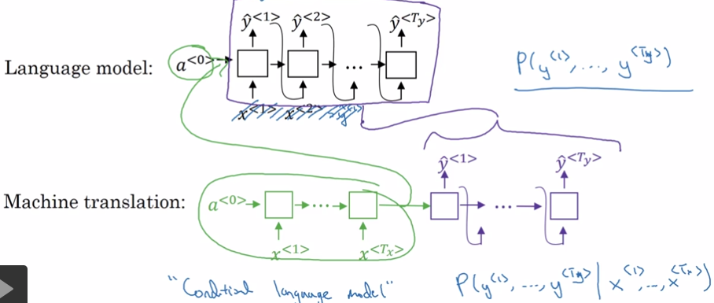
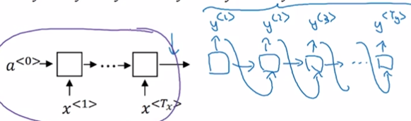
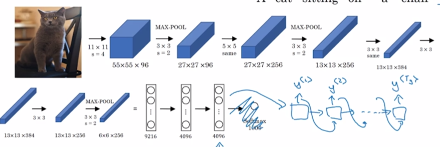

1. Seq2Seq
Seq2Seq与Language Model都可以用于生成字符串，它们的区别是：LM是随机生成字符串，Seq2Seq是条件生成字符串。

1.1. Neural Translation
Sutskever el. at., 2014. Sequence to sequence learning with neural networks
Cho et. al., 2014. Learning phrase representations using RNN encoder-decoder for statistical machine translation

1.2. Image Captioning
Mao et. al., 2014 Deep Captioning with nultimodal returrent neural netowrks
Vinyals et al., 2014. Show and tell: Neural image caption generator
Kelvin Xu. al., 2015. Show, Attend and Tell: Neural Image Cpation Generation With Visual Attention
根据图像生成描述：AlexNet + Decoder

2. 翻译模型
2.1. 同一句输入可能得到不同的输出，怎么找到最好的输出？
已知 即怎么找到，使得P(y|x)最大？
2.1.1. 贪心搜索 greedy search
每个时刻t都选择t时刻p(y)最大的y，直至输出
缺点：每一步都选择概率最高的y，但最后句子的整体概率不一定是最高的。
例如：
Jane is visiting Africa in September.
Jane is going to visit Africa in September.
英语中going比visiting常见，因此P(Jane is visiting|x) < P(Jane is going)，最后会得到第二句。
实际上整个句子来说，第一句比第二句好。
2.1.2. 束搜索/定义搜索 beam search
- 根据选择最好的B个y1

- 对每个y1分别计算它与各种y2组合的概率。并找出其中概率最高的B组y1, y2

- 对B个y1y2串，用同样的方法找出B个概率最高的y1y2y3。
- 直至最后得到了
。
当B=1时，beam search = greedy search
B大，则生成的句子可能更好，但计算代价更大。B小则反之。
产品中经常使用B=10。
在比赛或论文中，可能出现B=1000，3000等值，以得到更好的成绩。
BFS、DFS是精确搜索算法。
beam search是近似搜索算法/启发式搜索算法。
2.2. beam search的问题与改进
- 公式出现的、P(y|x)等都是概率值，且值很少，对它们做连乘容易出现下溢。
解决方法：P -> log P - 句子概率 = 每个单词概率的乘积，并选择概率最大的句子。这样长句子肯定没优势，算法会倾向于选择较短的句子。
解决方法：log P ->
2.3. beam search的debug
例子：某一句的翻译
人工翻译：y = Jane visits Africa in September.
机器翻译： = Jane visited Africa last September.
机器翻译改变了愿意，认为翻译得很差。
Debug: model由RNN(encoder + decoder)和beam search两部分组成
分别计算和
如果，则认为beam search不对。
如果，则认为RNN不对。
3. 评价翻译结果 - Bleu
Bleu = bilingual evaluation understudy = 双语评估替补
目的：当生成的字符串可以有多个答案时，评价生成字符串的好坏。
例如评价一个翻译句子的好坏。
Bleu Score用于各种文本生成的模型，但不用于语音识别。因为语音识别只有一个正确答案。
3.1. 定义
- 句子正确翻译为reference：
reference 1: The cat is on the mat. reference 2：There is a cat on the mat. - 定义机器翻译结果为MT output：
MT output: The cat the cat on the mat. - 定义n-gram为连续n个单词组成的一个短语。
Bleu算法不考虑大小写，因此在本例中，
1-gram有：the, cat, on, mat
2-gram有：the cat, cat the, cat on, on the, the mat - 定义Count(n-gram)为n-gram在MT output中出现的次数。CountClip(n-gram)为n-gram在所有reference中出现最多的次数。
在本例中Count(n-gram)和CountClip(n-gram)分别为：
| n-gram | Count(n-gram) | CountClip(n-gram) |
|---|---|---|
| the | 3 | max(2, 1)=2 |
| cat | 2 | max(1,1)=1 |
| on | 1 | 1 |
| mat | 1 | 1 |
| the cat | 2 | 1 |
| cat the | 1 | 0 |
| cat on | 1 | 1 |
| on the | 1 | 1 |
| the mat | 1 | 1 |
- 定义为n-gram的precision
例如在本例中，
- 定义Bleu Score
以上求出来的各种n-gram的precision。需要用一个数值来代表所有的Pn。
由于根据Pn公式，MT ouput短时更容易得高分。因此通过增加BP来调整。
BP = brevity penalty
BLEU是一个比较好的用单一实数来评价NMT的方法。加速了整个NMT领域的进程。也可以用于评价其它文件生成的结果。不用于语音，因为语音通常只有一个答案。